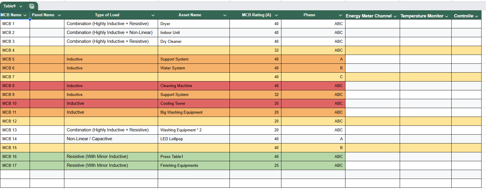
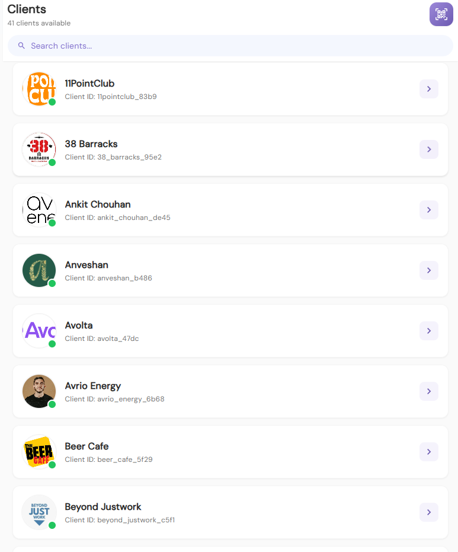
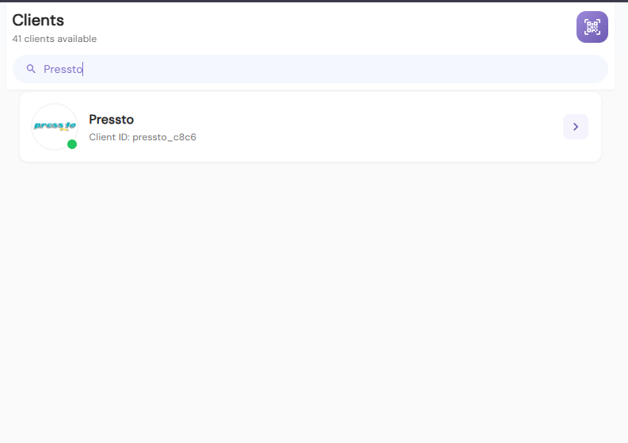
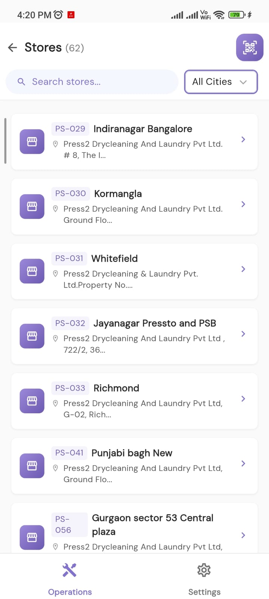
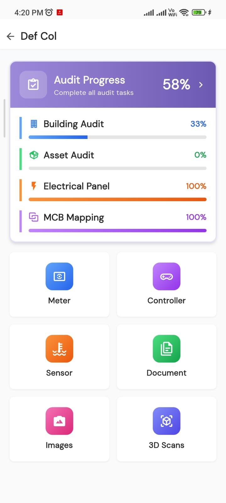
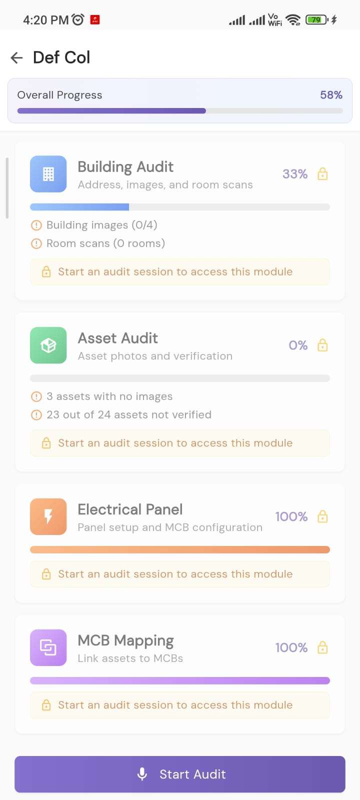
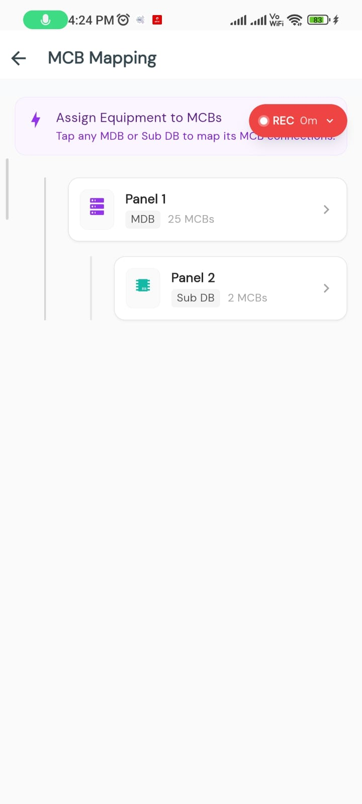
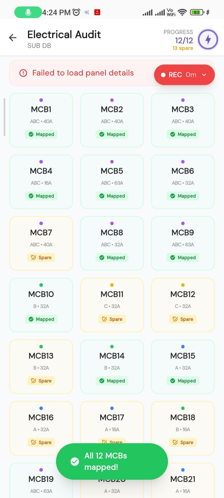
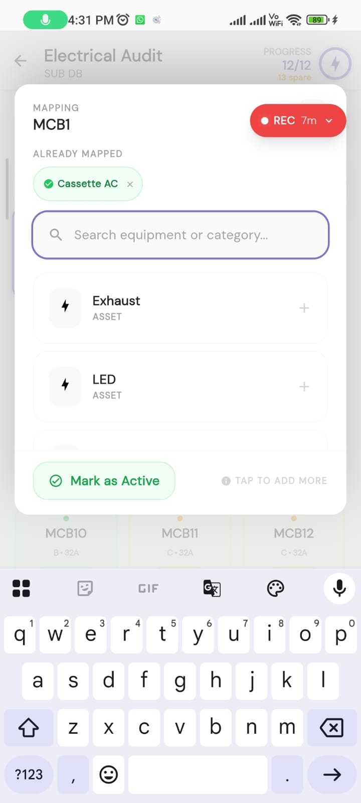
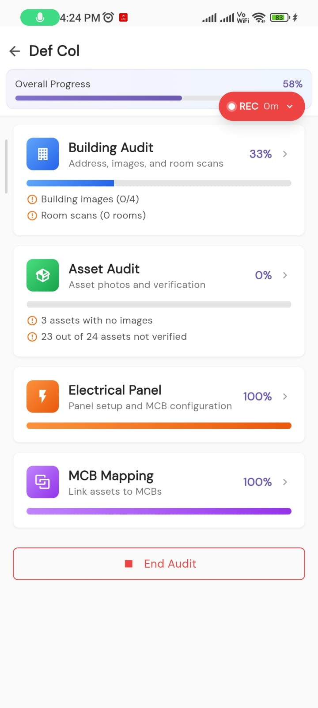

images/audit-flow/ folder with the filenames listed below each step. The HTML references these files directly.
1
Audit
Create Google Sheet
Create a new Google Sheet named with the client name and location. Add column headers for the MCB Mapping table.
Sheet Name: [Client Name] — [Location] — Installation Planning
Headers: MCB Name | Panel Name | Type of Load | Asset Name | MCB Rating (A) | Phase | Energy Meter Channel | Temperature Monitor | Controller
Headers: MCB Name | Panel Name | Type of Load | Asset Name | MCB Rating (A) | Phase | Energy Meter Channel | Temperature Monitor | Controller

Image 1 — Example MCB Mapping Table (Google Sheet)
2
Audit
Open Operations App — Client List
Open the Operations App on your phone. After login, you will see the Clients screen with all available clients listed.

Image 3 — Operations App: Clients list after login
3
Audit
Search for the Client
Use the search bar to type the client name. In this example, we search for "Pressto". Tap on the client to proceed.

Image 4 — Searching "Pressto" in the client list
4
Audit
Select the Location / Store
After selecting the client, you will see all their locations/stores. Search for or select the specific location for which installation planning needs to be done.

Image 5 — All stores/locations for the client
5
Audit
Site Opened — Audit Progress Overview
After clicking on a location, the site dashboard opens showing Audit Progress with different modules: Building Audit, Asset Audit, Electrical Panel, and MCB Mapping.

Image 6 — Site opened showing audit modules
6
Audit
Start Audit
Click on Audit Progress to open the detailed audit screen. You will see the "Start Audit" button at the bottom. Click it to begin the audit session.

Image 7 — Audit Progress screen with "Start Audit" button
7
Audit
MCB Mapping — Select Panel
After starting the audit, click on MCB Mapping. You will see the panels listed (e.g., Panel 1 — MDB with 25 MCBs, Panel 2 — Sub DB with 2 MCBs). Click on the panel you want to map.

Image 8 — MCB Mapping: Panel selection screen
8
Audit
View All MCBs in Panel
After clicking on a panel, all MCBs are displayed in a grid. Each MCB shows its name, phase, rating, and mapping status (Mapped or Spare). Note all this data in your Google Sheet.

Image 9/10 — All MCBs displayed in the panel grid
For each MCB, note in Google Sheet:
• MCB Name (e.g., MCB1)
• Panel Name (e.g., Panel 1)
• Phase (ABC, A, B, or C)
• MCB Rating (e.g., 40A, 32A)
• Whether it is Mapped (equipment linked) or Spare
• MCB Name (e.g., MCB1)
• Panel Name (e.g., Panel 1)
• Phase (ABC, A, B, or C)
• MCB Rating (e.g., 40A, 32A)
• Whether it is Mapped (equipment linked) or Spare
9
Audit
Click on MCB — View Linked Equipment
Click on an individual MCB to see what equipment is linked to it. The mapping screen shows already mapped equipment and allows you to search and add more. Note the Asset Name in your Google Sheet.

MCB1 mapped to "Cassette AC"

Add more equipment to MCB
In this example: MCB1 is linked to "Cassette AC". Additional equipment like "Exhaust" and "LED" can be added. The Type of Load can be determined from the equipment category. Once all MCBs are mapped, proceed to End Audit.
10
Audit
End Audit
Once all panels and MCBs are documented, go back and click "End Audit". Do NOT end until all panels are fully mapped.

"End Audit" button — click only after all panels mapped
11
Planning
Final Installation Planning Table
After completing the audit, create the Installation Planning Table beside the MCB Mapping table. Map each MCB to its Energy Meter Channel, CT sensor, and meter using the Technical SOP rules.
Image 1 — Final Installation Planning Table
Planning Table Columns: Meter Name | Channel | Global Channel | Phase | MCBID | Asset | CT
Rules: C1-C3 reserved for mains. MCBs mapped sequentially from C4. 3-phase MCBs use 3 consecutive channels. Same-phase MCBs can be combined.
Rules: C1-C3 reserved for mains. MCBs mapped sequentially from C4. 3-phase MCBs use 3 consecutive channels. Same-phase MCBs can be combined.